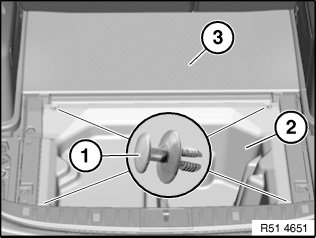
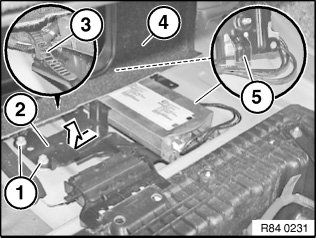
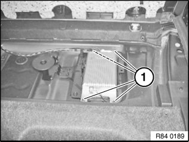

84 21 535 Removing and Installing/Replacing Hands-Free Charging Electronics
84 21 535 Removing And Installing/replacing Hands-free Charging Electronics

IMPORTANT: Read and comply with notes on protection against electrostatic damage (ESD protection).

NOTE: Comply with notes and instructions on handling optical fibres.

Necessary preliminary tasks:
- Clamp off battery negative lead
- Remove luggage compartment floor trim

E91:
Release retaining clips (1) and remove storage pan (2).
Fold panel (3) upwards.

E88/E84/E93:
Unscrew nuts (1).
Remove holder for telematics control unit / SES (2) in direction of arrow from body.
Raise panel for luggage compartment partition (4) slightly and feed out holder for telematics control unit / SES (2) in direction of luggage compartment.
Release wiring harness fastener (3) from holder for telematics control unit / SES (2).
Installation:
Make sure guides (5) are correctly seated in associated body holders.
Make sure wiring harness is correctly laid.

Unscrew nuts (1).
Remove charging hands-free electronics and disconnect associated plug connections.

Replacement:
- Carry out vehicle programming/coding
- If necessary, log mobile phone on to vehicle